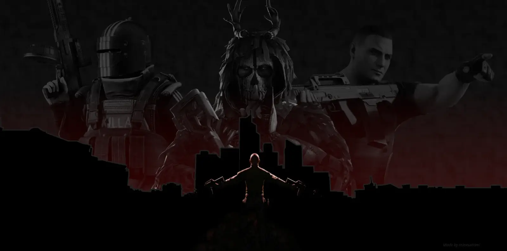
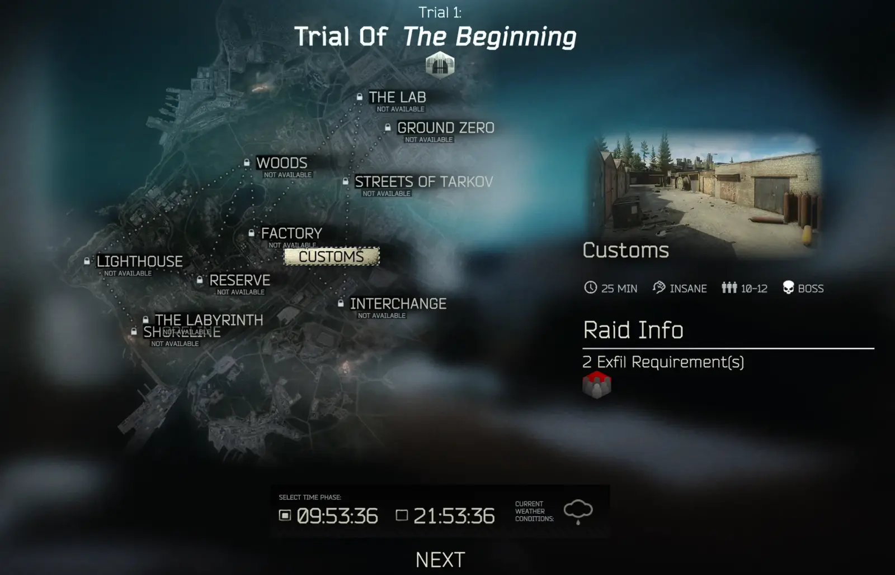

King Of Tarkov
- Downloads
- 881
- Favourites
- 5
- Mod lists
- 4
THIS MOD IS IN PUBLIC BETA! THERE MAY BE GAMEPLAY AND BALANCING ISSUES! NON-DETAILED REPORTS WILL BE IGNORED!
Report in the SPT Discord mods-development thread or github issue tracker!
USING THIS MOD VOIDS ALL SUPPORT FROM THE SPT DISCORD’S HELPERS
Updates for this mod are on hiatus for an indefinite amount of time.
King Of Tarkov is a mod about rising to the top. You muse complete 10 trials of increasing difficulty to be finally be crowned king (or queen). You will have to fight numerous enemies and bosses with limited resources. Oh, and limited lives.
A short summary of features:
Custom linear progression path
Modifiers/mutators
Difficulty settings
If you have ever played Hitman: Freelancer, this mod’s structure should seem familiar to you.

Detailed Overview
To beat King Of Tarkov, you have to beat 10 trials. Each trial consists of several raid locations you have to beat in any order.

Each raid also requires you to complete some conditions to leave. Don’t think about just getting the minimum to not be a run through!
On the final raid of a trial, you will have to kill the boss, so choose your locations properly!
Rewards
Loot drops are universally increased, levels are granted for raid and trial completion, and custom quests provide high end rewards.
Difficulties
Want a simpler challenge/experience? There are optional difficulties provided that can make loot drops more common, give more lives
Modifiers
This isn’t just a simple challenge, however. After the first trial you will encounter modifiers which will force you to switch up your playstyle and can sometimes be a brutal challenge.
There are currently 25 different modifiers in game, with even some that require other mods!
Fighting Killa on Labs with Explosive Bullets

- Download the latest KingOfTarkov zip
- Extract the SPT and BepInEx folder from it into your Single Player THE CITY folder (the one with the launcher exe, NOT the server)
- Start the server
- Create a new profile, the only profile type available should be KingOfTarkov.
- Hop in, check out your quests available, and good luck!
Notes: Making a new profile is mandatory to preserve the linear zero-to-hero experience and the lives system. You can restart by turning off the server, deleting save.json in SPT/user/mods/KingOfTarkov, then turn it back on.
To configure KingOfTarkov, first install then start the server before closing it. Then wipe the save by deleting save.json.
The main configuration to worry about is the difficulty, just enter the name of a difficulty from the difficulties folder. Start the server again to apply the changes.
Don’t like any of the existing difficulties? Make your own! Descriptions of all settings are provided in the normal difficulty.
YOU WILL NOT RECEIVE SUPPORT FOR EDITING ANY FILES IN THE DATABASE FOLDER
- Secret exits sometimes don’t work even after completing exfil conditions.
- Exfil conditions aren’t interesting enough.
- Sometimes weekly quests generate to exfil on the wrong locations.
Tarkin - Help with bundles and EFT assets
SPT Team - For all the hard work creating SPT
Without all of you, this wouldn’t be possible
Version
0.12.3
added some protection against repeat modifier ids being generated
Version
0.12.2
added performance mode which disables low performance locations and modifiers
now runs garbage collection after generating location data
Version
0.12.1
Added ABPS support
Fixes unsafe locale retrieval
Version
0.12.0
Initial Forge Public Beta